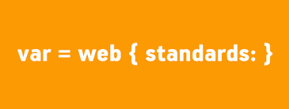

1. コーディング規約

1.1 プロジェクト構造
---/html/ |---- /index |---- /index/index.html 首页 |---- /user/ 与用户相关的页面 |---- /user/login.html 登录页 ---/css/ |---- /base.css 重置浏览器样式 |---- /page 逻辑页面的css |---- /page/pagename.css 单独书写的css |---- /common.css css通用样式库 ---/js/ |---- /lib 公用组件 |---- /lib/jquery.2.2.3.min.js 调用jq库文件 |---- /page 逻辑页面的js |---- /page/pagename.js 单独书写的js |---- /common.js 公用方法 ---/img/ |---- /page 页面对应的图片 |---- /page/wap 手机端图片夹 |---- /page/wap/wap_icon.png 手机端图标 |---- /logo.png 公用图片
1.2 プロジェクト命名規約
プロジェクト：プロジェクトに対応する英単語を使用して命名する
ファイルおよびフォルダ：
- すべて英小文字を使用し、ハイフンを使ってもよい。他の文字は使用不可。例：login, my-order
- `/lib` 内のファイルを呼び出す場合はバージョン番号を含めること。圧縮ファイルには `min` キーワードを含めること。他のプラグインでは含めなくてもよい。例：`/lib/jquery.1.9.1.js`
1.3 フォーマット＆エンコーディング
- テキストファイル： `.xxx` UTF-8_（BOMなし）_ エンコーディング
- 画像ファイル： `.png` _（PNG-24）_ `.jpg` _（圧縮率8-12）_
- 動画（アニメーション）画像： `.gif`
- 圧縮ファイル： `.tar.gz` `.zip` `.rar`
2. CSS 規約
2.1 CSS 命名規約
- すべての命名は小文字の英単語を使用する
- "left"、"bottom" のような単純な方位詞を直接命名に使用しない
- 単語を省略形にしない。ただし、一目で分かる単語は除く
- 長い名前や語句にはアンダースコアを接続記号として使用できる
- セレクタのネスト階層が多くなりすぎないようにする（3階層未満）
- id をむやみに使用しない。id は必要なときに使用し、濫用してはならない
- CSS のショートハンドプロパティを使用する。例：padding:0 10px 5px 5px など。これによりコードを簡潔にし、ユーザーの読みやすさも向上できる
命名の参考は以下の通り：
| CSS スタイル命名 | 説明 |
|---|---|
| Webページ共通命名 | |
| wrapper | ページ外周で全体レイアウト幅を制御 |
| container または content | コンテナ。最外層に使用 |
| layout | レイアウト |
| head, header | ページヘッダー部分 |
| foot, footer | ページフッター部分 |
| nav | メインナビゲーション |
| sub_nav | セカンドレベルナビゲーション（サブナビゲーション） |
| menu | メニュー |
| sub_menu | サブメニュー |
| side_bar | サイドバー |
| sidebar_l, sidebar_r | 左サイドバーまたは右サイドバー |
| main | ページ本体 |
| tag | タグ |
| msg message | ヒント情報 |
| tips | 小技 |
| vote | 投票 |
| friendlink | 相互リンク（フレンドリーリンク） |
| title | タイトル |
| summary | 概要 |
| login_bar | ログインバー |
| search_input | 検索入力ボックス |
| hot | 人気・ホットトピック |
| search | 検索 |
| search_output | 検索出力は検索結果に類似 |
| search_bar | 検索バー |
| search_results | 検索結果 |
| copyright | 著作権情報 |
| branding | 商標 |
| logo | サイトのLOGOマーク |
| site_info | サイト情報 |
| site_info_legal | 法的声明 |
| site_info_credits | 信用 |
| join_us | 私たちに参加（採用情報） |
| partner | パートナー |
| service | サービス |
| regsiter | 登録 |
| arr arrow | 矢印 |
| guild | ガイド |
| site_map | サイトマップ |
| list | リスト |
| home_page | ホームページ |
| sub_page | サブページ（セカンドレベルページ） |
| tool, toolbar | ツールバー |
| drop | ドロップダウン |
| dorp_menu | ドロップダウンメニュー |
| status | ステータス |
| scroll | スクロール |
| tab | タブ |
| left right center | 左寄せ、中央寄せ、右寄せ |
| news | ニュース |
| download | ダウンロード |
| banner | 広告バー（上部広告バー） |
2.2 CSS コーディング規約
「IDなし、階層なし、タグなし」という基準に近づけることで、再利用性を効果的に高め、ファイルサイズを減らし、レンダリング効率を向上させることができる
2.3 CSS コメント形式
ページを区別するためのコメント。例：/******************************************製品センター****************************************/
モジュールのコメント。例：/*ホームページナビゲーションバー*/
2.4 CSS各プロパティの並び順：厳密な要件はなし
- Positioning（位置指定。例：position、top、z-index）
- Box model（ボックスモデル。例：display、box-sizing、width、border）
- Typographic（タイポグラフィ。例：font、line-height、text-align）
- Visual（視覚。例：background、color、opacity）
- Other（その他。例：cursor）
Positioning（位置指定）は通常のドキュメントフローから要素を取り除くことができ、ボックスモデル（box model）関連のスタイルも上書きできるため、最初に配置します。ボックスモデルはコンポーネントのサイズと位置を決定するため、2番目に配置します。 その他のプロパティはコンポーネントの内部（inside）に影響を与えるだけか、前述の2つのグループのプロパティに影響を与えないため、後ろに配置します。
2.5 CSS フォーマット
改行しない方式で記述し、記述速度を上げる
.box{background: none repeat scroll 0 0 transparent;bottom: 11px;position: relative;width: 22px;z-index: 33;}
2.6 CSS フォント単位
- px ピクセル（Pixel）。相対的な長さの単位で、ピクセル px はディスプレイの画面解像度に対する相対値です
- em は相対的な長さの単位です。現在のオブジェクト内のテキストのフォントサイズに対する相対値です。現在の行内テキストのフォントサイズが人為的に設定されていない場合は、ブラウザのデフォルトフォントサイズに対する相対値になります
- rem も相対的な長さの単位ですが、相対するのは HTML のルート要素のみです
- vw はビューポート（Viewport）の幅の1%を表します。ビューポートの幅が1000pxの場合、50vw = 500px です
- vh はビューポートの高さの1%を表します。ビューポートの高さが800pxの場合、50vh = 400px です
- 会社のプロジェクトで使用する際の注意事項：既存のプロジェクトはすべて px を単位として使用していますが、現在は rem、vw、vh を単位として使用することを推奨します
3. JS 規約
3.1 JS 命名規約
3.1.1 JS 変数命名
命名方法：小キャメルケース
命名規約：接頭辞は名詞にする。（関数名の接頭辞は動詞にして、変数と関数を区別する）
命名の提案：変数名に所属する型をできるだけ反映させる。例：length、count などは数値型を表し、name、title を含むものは文字列型を表す
例
// 好的命名方式 var maxCount = 10; var tableTitle = 'LoginTable'; // 不好的命名方式 var setCount = 10; var getTitle = 'LoginTable';
3.1.2 JS 関数命名
命名方法：小キャメルケース
命名規約：接頭辞は動詞にする
命名の提案：一般的な動詞の慣例を使用できる
| 動詞 | 意味 | 戻り値 |
| can | ある動作を実行できるか（権限）を判定する | 関数はブール値を返します。true：実行可能；false：実行不可 |
| has | ある値を含むかどうかを判定する | 関数はブール値を返します。true：この値を含む；false：この値を含まない |
| is | ある値であるかどうかを判定する | 関数はブール値を返します。true：ある値である；false：ある値でない |
| get | ある値を取得する | 関数は非ブール値を返す |
| set | ある値を設定する | 戻り値なし、設定成功かどうかを返す、またはチェーンオブジェクトを返す |
| load | 何らかのデータをロードする | 戻り値なし、またはロード完了かどうかの結果を返す |
3.1.3 JS 定数命名
命名方法：名前はすべて大文字
命名規約：大文字とアンダースコアを組み合わせて命名し、アンダースコアは単語を区切るために使用する
例
var MAX_COUNT = 10; var URL = 'http://www.runoob.com';
3.1.4 JS ファイル命名
ハイフン（-）またはピリオド（.）を区切り記号として使用します。ピリオドを推奨します。できれば小文字の英字を使用し、他の記号や拡張文字は使用しないでください。例：jQuery UI 1.9.0 のソースファイルは "jquery-ui-1.9.0.js" と命名できます
.js 拡張子を使用してください。この拡張子の互換性が最も優れています。実際には、text タイプでエンコーディングが正しければ、どの拡張子でも構いません。
句点で区切って名前内の従属関係を表し、範囲の大きいものを前に置きます。例えば、jQuery のフォームプラグイン Form は jquery.form.js と命名できます。
3.2 js コメント形式
複数行コメントを使用し、/* で始まり、*/ で終わります。
3.3 js 注意事項
記述形式
- JS 改行インデント：tab（4つのスペースに展開）を使用します。
- 行の終わりにはセミコロン `;` を追加する必要があります。
パフォーマンス
- グローバル変数ではなく、できるだけローカル変数を選択してください。
- できるだけチェーン方式を使用してください。
- DOM 呼び出しをできるだけ減らしてください。
- js スクリプトはページの下部に配置してください。
- jquery の data を使用してデータを格納・取得し、DOM への操作を減らします。
- on メソッドを使用してイベントをバインドします。これは jquery の推奨される使用方法です。
- セレクタの選択：できるだけタグセレクタは使用せず、ID セレクタを使用できる場合は class セレクタを使用しません。
4. HTML 規約
4.1 タグ使用規約
タグの階層をできるだけ減らしてください。
双タグは必ず閉じ、単タグはスラッシュで閉じます。
HTML の最初の行は統一して HTML5 標準の <!DOCTYPE html> を使用します。
タグ末尾のスラッシュの記述形式は一律に統一します：`<br />` `<hr />` 間のスペースに注意してください。
廃止されたタグの使用は避けてください。例：`<font>` `<frame>` `<s>`
`<img>` タグのデフォルト形式：`<img src="../index.html" alt="默认时文字" />`
`<a>` タグのデフォルト形式：`<a href="../index.html" title="链接名称">xxx</>` 注：`target="_blank"` は要件に応じて決定します。
style、link、script は type 属性を省略できます。text/css と text/javascript がそれぞれのデフォルト値だからです。
4.2 HTML コメント
<!--内容--> <div class="content"> <p>content</p> </div>
4.3 注意事項
モバイル端末のレスポンシブレイアウトは、パーセントではなく、できるだけフレキシブルレイアウトを採用してください。
`css` ファイルはすべて head に配置します。
HTML 改行インデント：tab スペースを使用します。
その他の効果 `js` および `統計コード` ファイルはページ下部に配置します。
モバイル端末のページはすべて 750px を基準に作成し、表示効果は 375px を基準にします。
5. Image 規約
5.1 画像規約
画像サイズ：切り出し時には web 形式で保存し、画像サイズを小さくします。
画像寸法：一律で整数を使用します。例：20X20、50X50
画像結合：小さい画像は一律で結合し、後期修正のために、対応する psd ファイルを保存します。
原文リンク：https://lingdianit-com.github.io/Front-End-Standards/